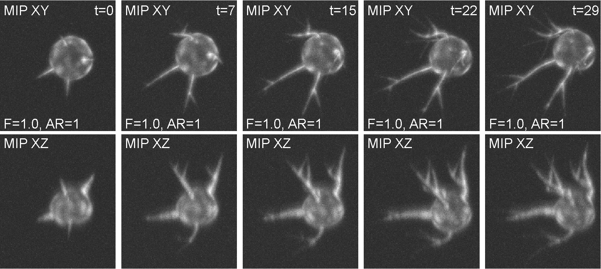
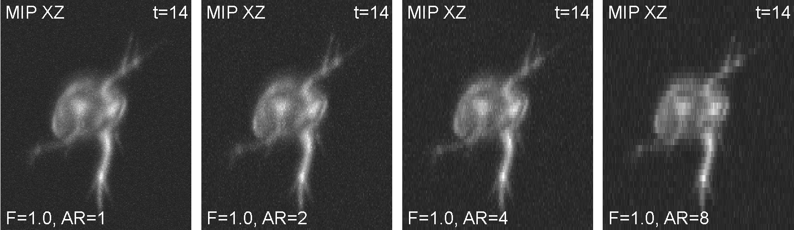
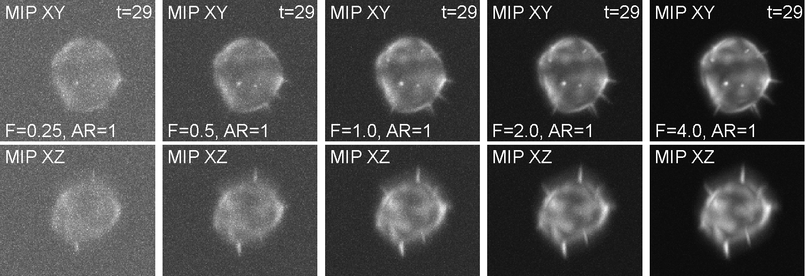

Broad Bioimage Benchmark Collection
Annotated biological image sets for testing and validation
FiloData3D - Single A549 cells with filopodia (synthetic image data)
Accession number BBBC046 · Version 1
Example images
-

-

-

Description of the biological application
The synthetic image data displays A549 lung cancer cells of three morphologically distinct phenotypes: wild-type (WT), CRMP-2-overexpressing (OE), and CRMP-2-phospho-defective (PD). Whereas the WT cells sporadically protrude a few single-branch filopodia that may appear and disappear, the OE cells protrude many of them with short lifetimes. By contrast, the PD cells protrude aberrantly long, branching filopodia with whole-experiment lifetimes.
This image set is primarily designed to study the limits and the parameter sensitivity of fully 3D filopodium segmentation and tracking workflows with respect to the structural and temporal attributes of filopodia, such as their number, thickness, length, level of branching, and lifetime, and to the quality of image data in terms of signal-to-noise ratios and anisotropy ratios.
Images
The image set consists of 180 synthetic 3D time-lapse sequences of single A549 lung cancer cells. It includes three sequences for each of the three phenotypes, generated in 20 alternatives with five different signal-to-noise ratios and four different anisotropy ratios. Each sequence, being composed of 30 frames, was generated using FiloGen (https://cbia.fi.muni.cz/research/simulations/filogen.html) that imitates transient cell transfection with the green fluorescent protein conjugated to actin and the image formation process using a spinning disk confocal microscope equipped with a water Plan-Apochromatic 63×/1.20 objective lens.
BBBC046_FiloData3D.zip (36.1 GB)
Ground truth C
The inherently generated reference annotations are formed of complete labeled image masks of the cell bodies and individual filopodial branches, along with comma-delimited text files describing spatiotemporal positions of filopodial tips as well as the lengths of filopodial branches over time. Ground truth files (TIFs and text files) are organized accordingly and can be found in the images zip file.
For more information
Please contact Martin Maška, of the Centre for Biomedical Image Analysis at Masaryk University, Czech Republic regarding this dataset.
Published results using this image set
Maŝka, M., Neĉasová, T., Wiesner, D., Sorokin, D. V., Peterlík, I., Ulman, V., & Svoboda, D. (2019). Toward Robust Fully 3D Filopodium Segmentation and Tracking in Time-Lapse Fluorescence Microscopy. 2019 IEEE International Conference on Image Processing (ICIP), 819–823. doi:10.1109/ICIP.2019.8803721.
Recommended citation
"We used image set BBBC046v1, available from the Broad Bioimage Benchmark Collection [Ljosa et al., Nature Methods, 2012]."
Copyright
 The images and ground truth are licensed under a
Creative Commons Attribution-NonCommercial-ShareAlike 3.0 Unported License by Martin Maška.
The images and ground truth are licensed under a
Creative Commons Attribution-NonCommercial-ShareAlike 3.0 Unported License by Martin Maška.